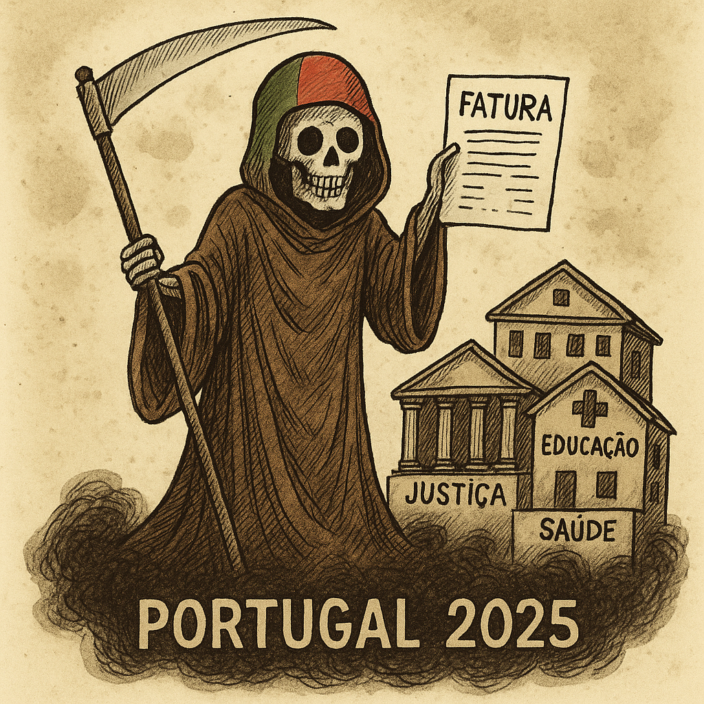

Publicado em 2025-05-05 20:26:17
Em pleno 2025, Portugal deixou de ser uma nação — passou a ser um formulário com NIF. Somos um país cuja bandeira devia ter um código QR no centro e cujos hinos agora são notificações das Finanças.
A digitalização avançou — sim, mas só até onde convinha ao Estado. Ainda esperamos meses por consultas, mas podemos pedir uma certidão de óbito em tempo real... mesmo estando vivos.
A justiça tornou-se um espetáculo de marionetas jurídicas, onde os culpados têm bons advogados e os inocentes... boa sorte. A educação virou instrução técnica para produzir consumidores obedientes, e a saúde está de baixa prolongada.
Governos entram e saem com promessas recicladas, como se a memória do povo fosse gerida por cookies: “aceitar tudo”, e siga. O Parlamento, esse, parece um refeitório de escola com gravatas — debates com o fervor de uma reunião de condomínio, e sempre com o povo ausente da equação.
O povo?
Ah, o povo...
Esse vive entre a resignação sardónica e a revolta em mute. Sobrevive de ironia, memes e cafés. Cada vez mais pobre, cada vez mais cansado, mas sempre educado na fila da farmácia.
Portugal 2025 é o resultado de décadas a governar com remendos, enquanto os senhores da boina e da gravata continuaram a gerir o país como quem gere uma herdade herdada: espremer tudo, plantar pouco, e culpar o tempo.
Mas há quem fale. Há quem escreva.
E enquanto houver fragmentos de caos, haverá fragmentos de verdade.
Por Augustus Veritas Lumen